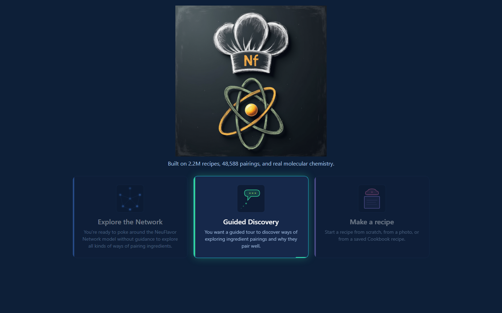
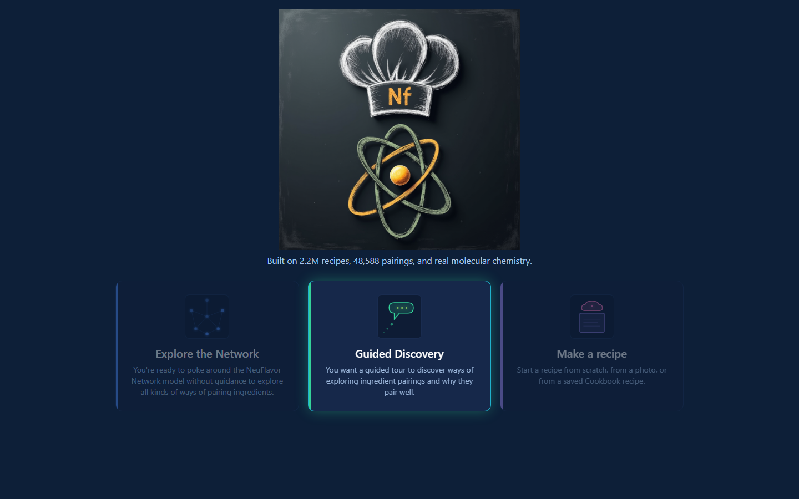

Guided Discovery — Wave 6 polish
Live walkthrough of the 4 commits shipped 2026-05-30. focal=tomato (or random), filterType=taste.
1. Screen 1 — ingredient pick
2. Screen 2 — radar dots are now α-mode neighbors (GD-RADAR-AFFINITY-COHERENCE)

3. Network tab — α-rings active on entry + Tour Step 1 popup (GD-TOUR-AFFINITY-ENGAGE + GD-TOUR-MANUAL-ADVANCE)
4. Tour Step 5 — refreshed chef-cognitive cluster names (GD-TOUR-COPY-MATCH)
